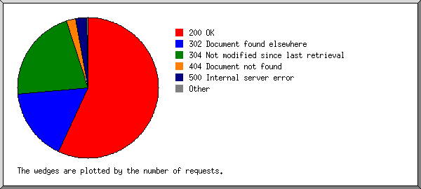

Web Server Statistics for es57045 Web Server Statistics for es57045
Web Server Statistics for es57045 Web Server Statistics for es57045(Go To: Top: General Summary: Monthly Report: Daily Summary: Hourly Summary: Failed Referrer Report: Search Word Report: Browser Report: Browser Summary: Operating System Report: Status Code Report: File Size Report: Redirection Report: Request Report)
This report contains overall statistics.
(Figures in parentheses refer to the 7-day period ending Jun 30
2004 at 11:59 PM).
Successful requests: 3,737 (2,125)
Average successful requests per day: 244 (303)
Logfile lines without status code: 63 (0)
Successful requests for pages: 4 (0)
Failed requests: 227 (180)
Redirected requests: 795 (441)
Distinct files requested: 178 (159)
Distinct hosts served: 193 (94)
Unwanted logfile entries: 17
Data transferred: 22.635 Mbytes (10.254 Mbytes)
Average data transferred per day: 1.481 Mbytes (1.464 Mbytes)
(Go To: Top: General Summary: Monthly Report: Daily Summary: Hourly Summary: Failed Referrer Report: Search Word Report: Browser Report: Browser Summary: Operating System Report: Status Code Report: File Size Report: Redirection Report: Request Report)
This report lists the activity in each month.
Each unit () represents 1 request for a page.
month: #reqs: #pages: --------: -----: ------: Jun 2004: 3737: 4:Busiest month: Jun 2004 (4 requests for pages).
(Go To: Top: General Summary: Monthly Report: Daily Summary: Hourly Summary: Failed Referrer Report: Search Word Report: Browser Report: Browser Summary: Operating System Report: Status Code Report: File Size Report: Redirection Report: Request Report)
This report lists the total activity for each day of the week, summed over all the weeks in the report.
Each unit () represents 1 request for a page.
day: #reqs: #pages: ---: -----: ------: Sun: 404: 0: Mon: 1043: 0: Tue: 464: 0: Wed: 355: 0: Thu: 768: 3:Fri: 374: 1: Sat: 329: 0:
(Go To: Top: General Summary: Monthly Report: Daily Summary: Hourly Summary: Failed Referrer Report: Search Word Report: Browser Report: Browser Summary: Operating System Report: Status Code Report: File Size Report: Redirection Report: Request Report)
This report lists the total activity for each hour of the day, summed over all the days in the report.
Each unit () represents 1 request for a page.
hour: #reqs: #pages: ----: -----: ------: 0: 107: 0: 1: 29: 0: 2: 2: 0: 3: 15: 0: 4: 14: 0: 5: 13: 0: 6: 19: 0: 7: 5: 0: 8: 9: 0: 9: 16: 0: 10: 1: 0: 11: 132: 0: 12: 6: 0: 13: 22: 0: 14: 16: 0: 15: 416: 0: 16: 258: 0: 17: 341: 0: 18: 431: 0: 19: 584: 0: 20: 391: 3:
(Go To: Top: General Summary: Monthly Report: Daily Summary: Hourly Summary: Failed Referrer Report: Search Word Report: Browser Report: Browser Summary: Operating System Report: Status Code Report: File Size Report: Redirection Report: Request Report)
This report lists the referrers containing broken links to the site.
Listing referring URLs, sorted by the number of failed requests.
#reqs: URL
-----: ---
89: https://www.dbates.com/component/forms/finishsubmission.asp
23: https://www.dbates.com/component/forms/finishsubmission.asp?step=0&task=2&id=test.txt
16: https://www.dbates.com/EditForm.asp
9: https://www.dbates.com/editform.asp
4: http://www.whois.sc/
4: http://www.uptimebot.com/
2: http://www.chubb.com/cgi-bin/agentlookup/ziplookupmore_v2.cgi
1: http://www.dbates.com/
1: http://www.durhamandbates.com/
1: http://www.dbates.com/services/clines_s.asp
(Go To: Top: General Summary: Monthly Report: Daily Summary: Hourly Summary: Failed Referrer Report: Search Word Report: Browser Report: Browser Summary: Operating System Report: Status Code Report: File Size Report: Redirection Report: Request Report)
This report lists which words people used in search engines to find the site.
Listing query words, sorted by the number of requests.
#reqs: search term
-----: -----------
9: bates
8: durham
6: &
2: insurance
2: model
2: and
1: oregon
1: glass
1: ship
1: financial
1: galleons
1: stern
1: agencies
1: agency
1: wheelers
1: development.com
1: inc
1: cases
1: for
(Go To: Top: General Summary: Monthly Report: Daily Summary: Hourly Summary: Failed Referrer Report: Search Word Report: Browser Report: Browser Summary: Operating System Report: Status Code Report: File Size Report: Redirection Report: Request Report)
This report lists the browsers used by visitors.

Listing the top 40 browsers by the number of requests, sorted by the number of requests.
#reqs: browser
-----: -------
1288: Mozilla/4.0 (compatible; MSIE 6.0; Windows NT 5.1; .NET CLR 1.0.3705; .NET CLR 1.1.4322)
596: Mozilla/4.0 (compatible; MSIE 6.0; Windows NT 5.0)
480: Mozilla/4.0 (compatible; MSIE 6.0; Windows NT 5.1)
439: Mozilla/5.0 (Windows; U; Windows NT 5.1; en-US; rv:1.6) Gecko/20040206 Firefox/0.8
140: Mozilla/4.0 (compatible; MSIE 6.0; Windows NT 5.1; .NET CLR 1.1.4322)
79: Mozilla/4.0 (compatible; MSIE 6.0; Windows NT 5.1; .NET CLR 1.0.3705)
62: Mozilla/4.0 (compatible; MSIE 5.01; Windows NT 5.0)
62: Mozilla/3.01 (compatible;)
48: Mozilla/4.0 (compatible; MSIE 6.0; Windows NT 5.0; .NET CLR 1.0.3705; .NET CLR 1.1.4322)
44: Mozilla/4.0 (compatible; MSIE 6.0; Windows NT 5.0; Q312461; .NET CLR 1.0.3705; .NET CLR 1.1.4322)
41: Mozilla/4.0 (compatible; MSIE 5.5; Windows NT 4.0)
38: Mozilla/4.0 (compatible; grub-client-2.3)
37: Mozilla/4.0 (compatible; MSIE 6.0; Windows NT 5.0; FunWebProducts)
31: Mozilla/4.0 (compatible; MSIE 6.0; AOL 8.0; Windows NT 5.1; .NET CLR 1.0.3705)
29: MSFrontPage/4.0
29: Mozilla/5.0 (compatible; Yahoo! Slurp; http://help.yahoo.com/help/us/ysearch/slurp)
27: Mozilla/4.0 (compatible; MSIE 6.0; Windows NT 5.0; .NET CLR 1.1.4322)
26: Mozilla/4.0 (compatible; MSIE 6.0; Windows 98; AT&T CSM7.0)
25: Mozilla/4.0 (compatible; MSIE 6.0; Windows 98)
24: Mozilla/4.0 (compatible; MSIE 6.0; Windows NT 5.1; ESB{1F1E3EF7-C3CB-48B7-A12D-387CB98D7C4A}; .NET CLR 1.1.4322)
18: Googlebot/2.1 ( http://www.googlebot.com/bot.html)
18: Mozilla/4.0 (compatible; MSIE 6.0; Windows NT 5.1; Q312461; .NET CLR 1.0.3705)
14: Mozilla/4.0 (compatible; MSIE 5.5; Windows NT 5.0)
14: Mozilla/4.0 (compatible; MSIE 5.22; Mac_PowerPC)
12: Mozilla/5.0 (Windows; U; Windows NT 5.1; en-US; rv:1.7) Gecko/20040614 Firefox/0.8
11: Mozilla/4.0 (compatible; MSIE 6.0; MSNIA; Windows 98; MSOCD; .NET CLR 1.0.3705; .NET CLR 1.1.4322)
10: Mozilla/4.0 (compatible; MSIE 6.0; Windows NT 5.2; .NET CLR 1.1.4322)
9: Mozilla/4.0 (compatible; grub-client-1.5.3; Crawl your own stuff with http://grub.org)
8: Mozilla/4.0 (compatible; MSIE 5.01; Windows NT 5.0; .NET CLR 1.1.4322)
7: Mozilla/4.0 (compatible; MSIE 6.0; Windows NT 5.1; (R1 1.3); .NET CLR 1.1.4322)
6: MSProxy/2.0
6: Mozilla/4.0 (compatible; MSIE 6.0; AOL 9.0; Windows NT 5.1; .NET CLR 1.1.4322)
6: Mozilla/5.0 (Windows; U; Windows NT 5.1; en-US; rv:1.7) Gecko/20040614 Firefox/0.9
6: Mozilla/4.0 (compatible; MSIE 5.5; Windows 98)
6: Mozilla/4.0 (compatible; MSIE 6.0; AOL 8.0; Windows 98)
6: Mozilla/4.0 (compatible; MSIE 6.0; Windows 98; .NET CLR 1.1.4322)
4: msnbot/0.11 ( http://search.msn.com/msnbot.htm)
4: Mozilla/4.0 (compatible; MSIE 5.01; Windows NT 5.0; Boeing Kit)
3: Mozilla/4.0 (compatible; Lotus-Notes/6.0; Windows-NT)
3: Mozilla/2.0 (compatible; Ask Jeeves/Teoma)
21: [not listed: 11 browsers]
(Go To: Top: General Summary: Monthly Report: Daily Summary: Hourly Summary: Failed Referrer Report: Search Word Report: Browser Report: Browser Summary: Operating System Report: Status Code Report: File Size Report: Redirection Report: Request Report)
This report lists the vendors of visitors' browsers.
Listing browsers, sorted by the number of requests.
#reqs: browser
-----: -------
3061: MSIE
2909: MSIE/6
152: MSIE/5
457: Netscape
457: Mozilla/1
153: Netscape (compatible)
29: MSFrontPage
29: MSFrontPage/4
18: Googlebot
18: Googlebot/2
6: MSProxy
6: MSProxy/2
4: msnbot
4: msnbot/0
3: Tutorial Crawler 1.4 (http:
3: Tutorial Crawler 1.4 (http://www
2: Java
2: Java/1
2: Wget
2: Wget/1
1: MFC_Tear_Sample
1: Bumblebee@relevare.com
(Go To: Top: General Summary: Monthly Report: Daily Summary: Hourly Summary: Failed Referrer Report: Search Word Report: Browser Report: Browser Summary: Operating System Report: Status Code Report: File Size Report: Redirection Report: Request Report)
This report lists the operating systems used by visitors.
Listing operating systems, sorted by the number of requests for pages.
#: #reqs: #pages: OS --: -----: ------: -- 1: 195: 3: OS unknown 2: 3507: 1: Windows : 840: 1: Windows 2000 : 80: 0: Windows 98 : 1: 0: Windows 95 : 43: 0: Windows NT : 470: 0: Unknown Windows : 2073: 0: Windows XP 3: 21: 0: Robots 4: 14: 0: Macintosh : 14: 0: Macintosh PowerPC
(Go To: Top: General Summary: Monthly Report: Daily Summary: Hourly Summary: Failed Referrer Report: Search Word Report: Browser Report: Browser Summary: Operating System Report: Status Code Report: File Size Report: Redirection Report: Request Report)
This report lists the HTTP status codes of all requests.

Listing status codes, sorted numerically.
#reqs: status code
-----: -----------
2702: 200 OK
7: 206 Partial content
795: 302 Document found elsewhere
1028: 304 Not modified since last retrieval
2: 401 Authentication required
99: 404 Document not found
2: 405 Method not allowed
124: 500 Internal server error
(Go To: Top: General Summary: Monthly Report: Daily Summary: Hourly Summary: Failed Referrer Report: Search Word Report: Browser Report: Browser Summary: Operating System Report: Status Code Report: File Size Report: Redirection Report: Request Report)
This report lists the sizes of files.
size: #reqs: %bytes:
-----------: -----: ------:
0: 604: :
1b- 10b: 0: :
11b- 100b: 0: :
101b- 1kb: 1141: 1.45%:
1kb- 10kb: 1511: 18.70%:
10kb-100kb: 465: 66.19%:
100kb- 1Mb: 16: 13.66%:
(Go To: Top: General Summary: Monthly Report: Daily Summary: Hourly Summary: Failed Referrer Report: Search Word Report: Browser Report: Browser Summary: Operating System Report: Status Code Report: File Size Report: Redirection Report: Request Report)
This report lists the files that caused requests to be redirected to another file. (Usually directories with the final slash missing, or CGI scripts that forced redirections.)
Listing files, sorted by the number of redirected requests.
#reqs: file
-----: ----
202: /component/login.asp
174: /default.asp
82: /client/default.asp
73: /editform.asp
65: /client/
39: /services/
33: /about/
26: /component/forms/addattachments.aspx
16: /privacy.asp
15: /loadform.asp
13: /loadform.asp?ID=7666-264-925-10
11: /viewdocument.asp
10: /agent/default.asp
6: /focus/mvrreg/mvrreg0.asp
5: /focus/mvrreg/default.asp
4: /focus/euse/euse1.asp
4: /about/news.asp
4: /agent/
4: /contact.asp
3: /sitemap.asp
3: /risk101.asp
3: /client/loadprintform.asp
2: /focus/euse/
2: /customer.asp
2: /agent/viewform.asp
2: /events.asp
2: /focus/euse/default.asp
1: /focus/mvrreg/
1: /component/forms/finishsubmission.asp
1: /directry.asp
(Go To: Top: General Summary: Monthly Report: Daily Summary: Hourly Summary: Failed Referrer Report: Search Word Report: Browser Report: Browser Summary: Operating System Report: Status Code Report: File Size Report: Redirection Report: Request Report)
This report lists the files on the site.
Listing files with at least 20 requests, sorted by the number of requests.
#reqs: %bytes: last time: file -----: ------: ------------------: ---- 310: 4.99%: Jun/30/04 4:31 PM: /component/forms/finishsubmission.asp 19: 0.20%: Jun/27/04 5:18 PM: /component/forms/finishsubmission.asp?step=1&task=0 16: 0.41%: Jun/27/04 4:15 PM: /component/forms/finishsubmission.asp?step=0&task=2&id=test.txt 13: 0.24%: Jun/26/04 9:27 PM: /component/forms/finishsubmission.asp?step=-1 11: 0.21%: Jun/28/04 9:51 PM: /component/forms/finishsubmission.asp?step=0&task=0 211: 0.53%: Jun/30/04 4:31 PM: /client/document/resource/client.css 170: 0.91%: Jun/30/04 10:04 PM: /resource/dbates.css 163: 6.66%: Jun/30/04 10:04 PM: /resource/toc.gif 141: 0.43%: Jun/30/04 6:05 PM: /component/forms/validation.js 137: 0.44%: Jun/30/04 4:30 PM: /component/forms/form.css 108: 0.19%: Jun/30/04 4:30 PM: /resource/spacerline.gif 101: : Jun/30/04 10:04 PM: /default.asp 89: 1.58%: Jun/30/04 4:30 PM: /editform.asp 87: 6.37%: Jun/30/04 5:35 PM: /resource/title.jpg 78: 9.16%: Jun/30/04 10:04 PM: /resource/homepics.jpg 77: 0.53%: Jun/30/04 10:04 PM: /resource/t_welcome.jpg 76: 1.16%: Jun/30/04 10:04 PM: /resource/title.gif 62: 0.75%: Jun/30/04 4:31 PM: /client/select.asp 56: 0.16%: Jun/30/04 4:31 PM: /client/resource/serviceteam.gif 56: 0.19%: Jun/30/04 4:31 PM: /client/resource/dbhome.gif 56: 0.26%: Jun/30/04 4:31 PM: /client/resource/title.gif 56: 0.09%: Jun/30/04 4:31 PM: /client/resource/divider.gif 55: 0.11%: Jun/30/04 4:31 PM: /client/resource/forms.gif 53: 0.23%: Jun/30/04 4:31 PM: /client/selectaccounts/logo.gif 53: 0.09%: Jun/30/04 4:31 PM: /client/resource/leftlinks.gif 52: 0.13%: Jun/30/04 4:31 PM: /client/document/resource/dotdoc.gif 49: : Jun/30/04 1:17 PM: /component/login.asp 48: 0.85%: Jun/30/04 4:30 PM: /loadform.asp 45: 0.79%: Jun/30/04 4:03 PM: /loadform.asp?ID=7666-264-925-10 44: 0.15%: Jun/30/04 9:55 PM: /resource/spacer.gif 44: 9.62%: Jun/30/04 10:05 PM: /resource/about.jpg 41: : Jun/29/04 1:00 AM: /services/default.asp 41: : Jun/30/04 4:07 PM: /contact.asp 39: : Jun/30/04 10:04 PM: /about/default.asp 34: 10.88%: Jun/30/04 4:07 PM: /resource/contacttx.jpg 30: 0.23%: Jun/30/04 10:04 PM: /resource/t_about.jpg 30: 0.14%: Jun/30/04 10:05 PM: /resource/x_master.jpg 27: 3.54%: Jun/30/04 4:07 PM: /directry.asp 26: 0.15%: Jun/28/04 8:25 PM: /resource/dialp.jpg 26: 0.18%: Jun/28/04 8:25 PM: /resource/dialc.jpg 26: 0.15%: Jun/17/04 8:53 PM: /_vti_bin/_vti_aut/author.dll 25: 0.22%: Jun/30/04 4:07 PM: /resource/t_contact.jpg 25: 0.15%: Jun/28/04 8:25 PM: /resource/dialn.jpg 24: 6.64%: Jun/29/04 1:00 AM: /resource/services.gif 23: 1.24%: Jun/30/04 10:05 PM: /resource/abouttx.jpg 23: 0.03%: Jun/30/04 4:30 PM: /signin.asp 21: : Jun/28/04 10:20 PM: /services/clines0.asp 21: 0.23%: Jun/26/04 12:02 AM: /resource/t_clines.jpg 21: 3.57%: Jun/26/04 12:02 AM: /resource/clines.jpg 20: 0.09%: Jun/28/04 9:28 PM: /agent/document/resource/agent.css 782: 26.95%: Jun/30/04 9:55 PM: [not listed: 117 files]
(Go To: Top: General Summary: Monthly Report: Daily Summary: Hourly Summary: Failed Referrer Report: Search Word Report: Browser Report: Browser Summary: Operating System Report: Status Code Report: File Size Report: Redirection Report: Request Report)